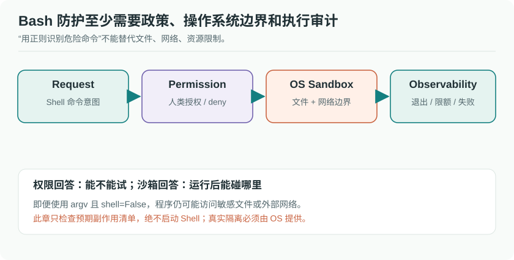
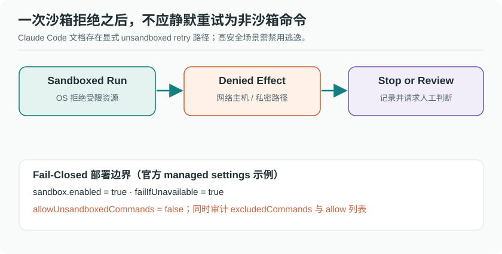

Bash 沙箱的真实安全边界：权限、文件、网络与逃逸重试
不把命令正则或 subprocess 包装器伪装成 OS 沙箱；解释 Claude Code 沙箱权限、非沙箱重试、威胁模型与可测的故障关闭策略。
为什么 Shell 字符串“看起来安全”仍不够
允许模型运行单条测试命令，可能已经具备读写本地文件、发起网络连接或启动子进程的能力。shell=False 防止了一类 shell 字符串解释问题，但程序本身的权限仍然存在；把危险命令写成黑名单正则同样无法穷尽参数组合、重定向、包装器和文件系统别名。
因此本章不提供“用 50 行 Python 写生产级 Bash 沙箱”的误导性示例，而采用离线 Sandbox Manifest 检查器来解释需求清单，最后明确要求真正的操作系统隔离。

Claude Code 官方 Bash 沙箱的作用范围
官方文档描述 Bash、PowerShell 与 Monitor 命令运行时的文件系统和网络访问控制，及其子进程继承的约束。沙箱只覆盖受其管理的命令，不会自动隔离所有 Claude Code 工具。沙箱auto-allow 模式与产品权限的 auto 模式也是两种不同机制：一个依赖隔离边界减少确认，另一个可能依赖分类器。
| 控制点 | 主要保护 | 不能保证 |
|---|---|---|
| 权限规则 deny/ask/allow | 决定执行前的授权 | 程序运行后能访问什么 |
| OS 文件隔离 | 限制可读与可写路径 | 未知内核漏洞与外部数据正确性 |
| 网络代理/限制 | 限制外联主机与范围 | 被允许站点一定安全 |
| 资源限制和审计 | CPU/时间/输出与可追踪性 | 阻止所有副作用与信息泄漏 |
注意 unsandboxed retry：越界重试不是常规失败恢复
Claude Code 文档解释了沙箱拒绝后可能通过 dangerouslyDisableSandbox 进行非沙箱重试的路径。其允许方式取决于权限模式、匹配规则和受管理设置；在错误配置下，已有允许规则还可能让非沙箱重试减少用户提示。因此“开启了沙箱”不是足够的安全声明。

按照官方管理设置示例，sandbox.enabled=true、failIfUnavailable=true、allowUnsandboxedCommands=false 可以帮助形成更严格的防线。实际可用字段和覆盖顺序需按版本验证；单靠文章中的配置片段不能证明安全。
离线副作用清单：在调用前做预检
预检代码拒绝关闭沙箱、禁止自动非沙箱重试、限制目标文件目录和网络主机。调用方只描述本次测试请求预期的效果，不执行任何系统命令：
cfg = SandboxManifest(
enabled=True, fail_if_unavailable=True,
allow_unsandboxed_retry=False,
network_hosts=frozenset(),
writable_subdirs=frozenset({"scratch"})
)
print(preview(cfg, EffectRequest(
command_label="test", writes_to="scratch/report.txt"
))) # (True, ... preflight ...)返回 True 仅表示“声明通过预检”，不是 OS 真实执行许可，也无法识别实际子进程隐含的系统调用。需要用真正的 OS 沙箱保证这一点。
路径穿越、符号链接与供应链是不同威胁
用户指定的写入路径即使位于允许子目录，也可能经过 symlink、挂载点、竞态目录替换或被运行程序重写路径。预检器只拒绝明显的绝对路径和 ..，并没有解析真实文件系统。因此不能据此阻止同机不可信进程攻击。类似地，允许 npm test 可以执行项目安装的脚本；它可能受到依赖、脚本与环境变量影响。
关键边界
真正的沙箱需要在操作系统层验证文件和网络访问，再根据风险决定是否能运行不可信命令。当前代码从不调用 subprocess、os.system 或 Bash。
如何验证沙箱并非只检查设置文件
- 固定 Claude Code 版本、操作系统、沙箱模式、受管理设置与工作目录。
- 使用无敏感内容的临时工作区，先尝试正常读取与写入受允许的临时文件。
- 测试对非允许路径与网络主机的访问能否被 OS 真正拒绝。
- 模拟沙箱依赖缺失，确保启动失败而不是自动降低保护。
- 检查非沙箱重试路径、排除命令和管理策略是否可绕过预期边界，保留审计记录。
这一验收属于真实隔离环境测试，不能让静态 Python Manifest 测试取代。
离线测试与扩展
执行 python3 -m unittest discover -s examples -p 'test_*.py'。测试覆盖缺失沙箱、非沙箱重试、未知命令配置、超出写入范围、路径穿越与未知网络目标。
参考资料与事实边界
- Claude Code Sandboxing — 沙箱边界、auto-allow、unsandboxed retry 与管理设置
- Claude Code Permissions — 权限模式与规则
- Claude Code Settings — 配置合并与受管理规则
本章图解与 Python 示例为本仓库的教学 Harness，不代表 Claude Code 私有实现。真实产品行为请以当前官方文档、平台与设置为准。